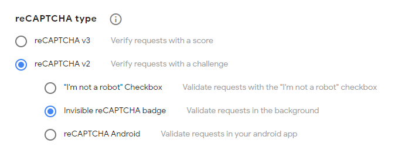

Configuration¶
Klodd is configured using YAML1 files. Klodd will load all files with .yaml or .yml extensions in the configuration directory in order by filename, then merge all of them together. By default, the configuration directory is /app/config/, but this may be changed using the environment variable KLODD_CONFIG. All configuration options are required, though some have sensible defaults.
Reference¶
| Property | Default | Type | Description |
|---|---|---|---|
challengeDomain |
none | string | Challenges will be accessible through subdomains of this domain. |
kubeConfig |
'cluster' |
string | Where the kubeconfig will be loaded from. (details) |
listen |
0.0.0.0:5000 |
ListenOptions | ListenOptions passed to fastify.listen (details) |
publicUrl |
none | string | The URL where Klodd is publicly accessible. |
rctfUrl |
none | string | The URL where rCTF is publicly accessible. |
recaptcha |
test keys | object | The reCAPTCHA v2 keys. (details) |
secretKey |
none | string | The secret key used to sign user tokens. |
traefik |
none | object | The Traefik entrypoints to use for challenges (details) |
ingress |
none | NetworkPolicyPeer | A source that will be allowed to access the exposed pod. (details) |
reapInterval |
30000 |
integer | The interval, in milliseconds, that the expired instance reaper will run. (details) |
logLevel |
'info' |
string | The logging level. (details) |
kubeconfig¶
The kubeConfig property tells Klodd where to load the kubeconfig from. By default, this is set to 'cluster', which uses the ServiceAccount token mounted to the pod Klodd is running in. The other option is 'default', which loads from ~/.kube/config or whatever the KUBECONFIG environment variable is set to.
reCAPTCHA¶
Klodd uses reCAPTCHA v2 to verify that requests to create and delete instances are not automated. First, register a new site, making sure to select "reCAPTCHA v2" and "Invisible reCAPTCHA badge" as shown below. Then, configure recaptcha.siteKey and recaptcha.secretKey with the keys you are given.

Traefik¶
As mentioned in Prerequisites, you should have configured two Traefik entrypoints—one for web challenges and another for TCP challenges. Set traefik.httpEntrypoint and traefik.tcpEntrypoint to the names of these entrypoints, and set traefik.tcpPort to the port number of the exposed TCP entrypoint so it can be properly displayed on the frontend.
Additionally, ingress must be allowed from Traefik to the exposed pod of each instance. Set ingress to a NetworkPolicyPeer object that matches Traefik. This will be used in a NetworkPolicy for each instance.
Reaper¶
Klodd schedules termination of each instance when it is created, and restores these on startup. Normally, this is sufficient; however, Klodd also periodically runs a "reaper," which goes through all running instances and updates their scheduled termination. This ensures that no instances will remain running indefinitely. By default, the reaper runs every 30 seconds, but this interval can be configured with the reapInterval property.
Log Level¶
Klodd uses Pino for logging, and the log level can be configured to any level that Pino accepts. The table is reproduced here for convenience:
| Level: | trace | debug | info | warn | error | fatal | silent |
| Value: | 10 | 20 | 30 | 40 | 50 | 60 | Infinity |
By default, Klodd uses 'info' if the environment variable NODE_ENV=production is present and 'debug' otherwise.
-
Since YAML is a superset of JSON, including JSON or using entirely JSON in your
.yaml/.ymlfiles is valid and allowed. ↩